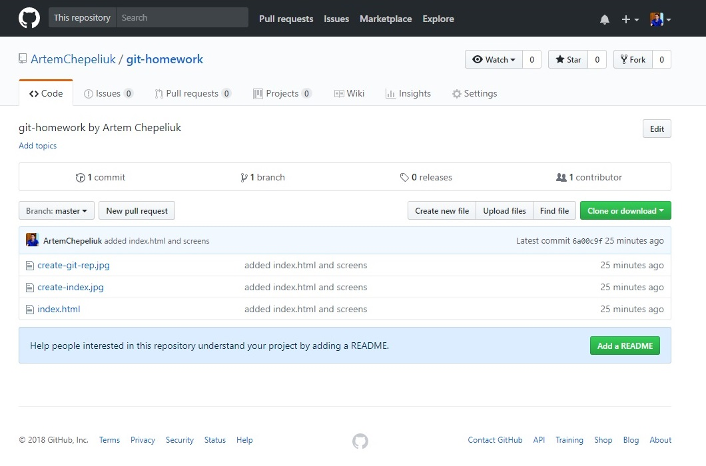
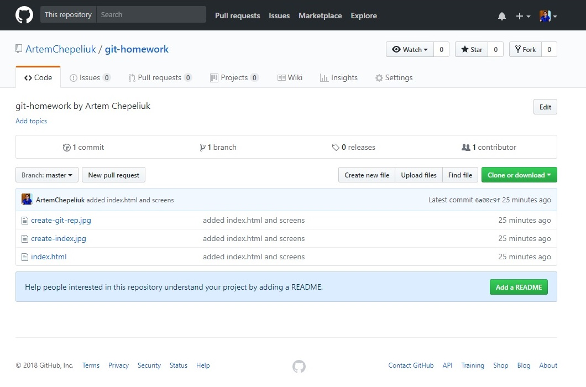
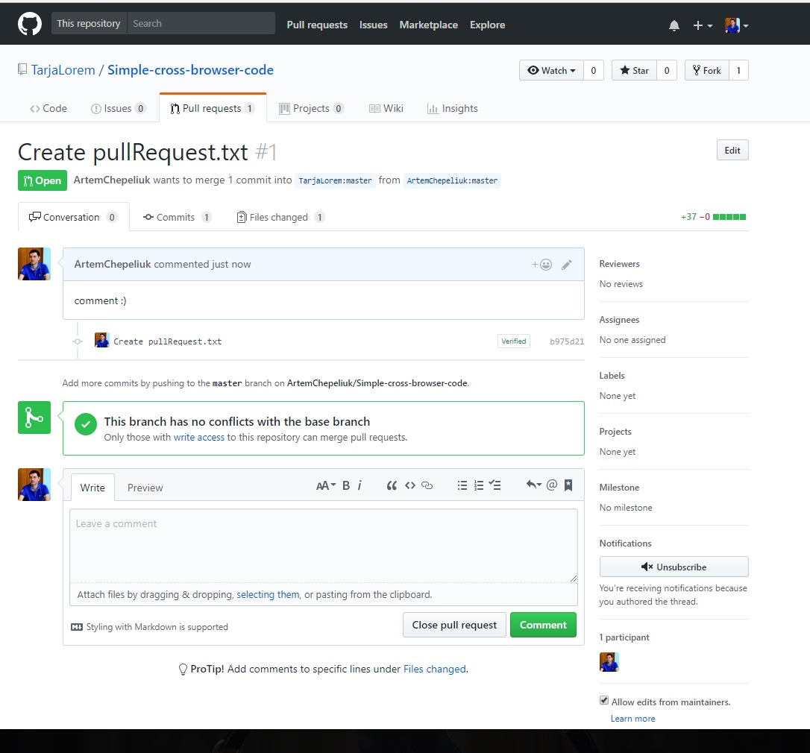
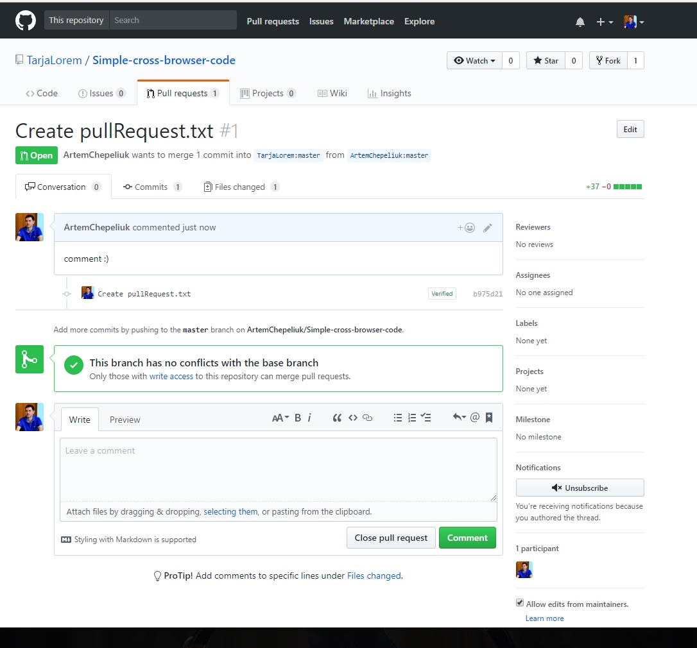
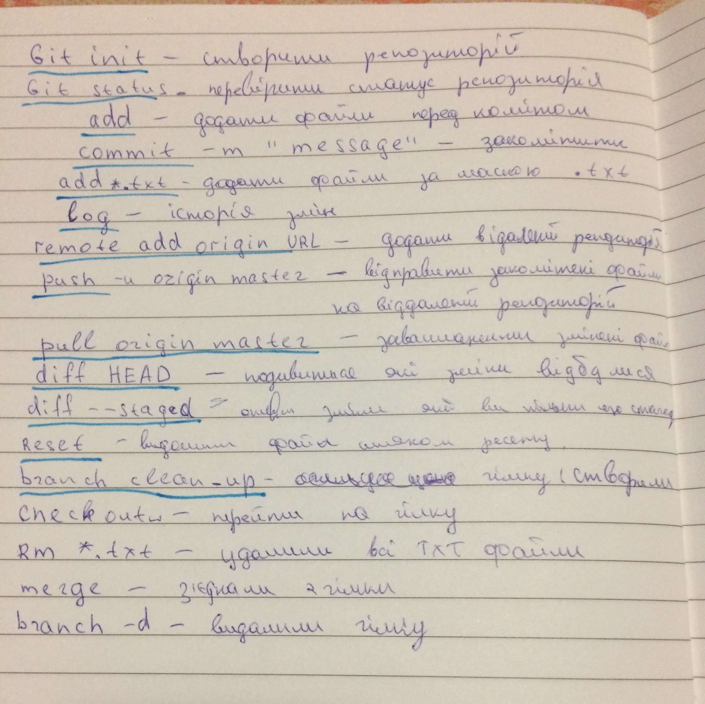

Set up Git (and configure) on your local machine.
Github profile review
Artem Chepeliuk on Github
Мій профіль хороший як для початківця, я заповнив основну інформацію про себе, правда не зрозумів як вказати свій email. :)
Щоб покращити свiй профіль мені потрібно активно ним займатися, оновлювати інформацію, і додавати проекти над якимми я буду в подальшому працювати.
Create & configure first repository from console. Push few files


 


Create & configure first repository from Github
Click here to see
Make Fork & PR of repository from anyone else from group.
Fork
linkPull request
link 

Create Github Pages from any of your repository
linkPlay https://try.github.io/
Fork, push changes for Fork, and Create PR for github.com/cursor-education/welcome-to-github.
link PR